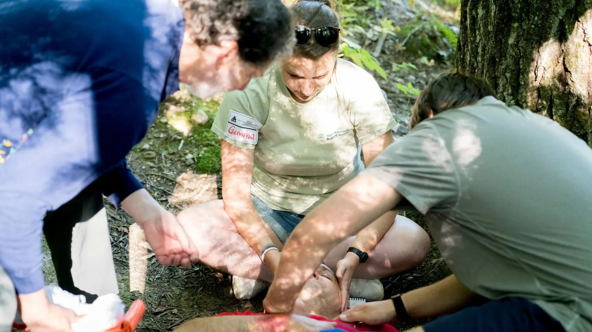

CARE WITHOUT THE TACTICAL THEATER
The Family Adventure First-Aid Kit: Build It Around the Day
Carry what you can use, make the important things findable, and know when the only correct tool is the exit plan.

One pouch cannot serve every trip
The kit for a playground ten minutes from home does not need to impersonate a wilderness clinic. The kit for a cold half-day hike should not be the three bandages that have lived in the glove box since 2021. Build around four facts: who is going, what is likely to happen, how long help or the car may take, and what the adults are trained to do.
The American Red Cross publishes a detailed first-aid kit list sized for a family of four. Treat it as a starting inventory, then adapt quantities and additions with a qualified clinician or pharmacist when allergies, prescriptions or specific health conditions are involved. Do not add unfamiliar medication or medical gear merely because a premade kit has an empty loop for it.
The four-layer family system
Layer 1: the small outing kit
This is the pouch that actually leaves the car. A practical core may include assorted adhesive bandages, sterile gauze, medical tape, antiseptic wipes, disposable gloves, tweezers, a small cold pack and a simple first-aid reference. Add personal items the responsible adult knows how to manage. Keep it bright, labeled and small enough to live near the top of the daypack.
Layer 2: the car resupply kit
The car can hold more dressings, cleaning supplies, spare gloves, a blanket and duplicate basics. It is a resupply point, not a substitute for carrying essentials when the route leaves the parking lot. Avoid storing heat-sensitive medication or supplies in a vehicle unless their instructions explicitly allow the temperature range.
Layer 3: the personal-needs module
Necessary medication, allergy information and condition-specific supplies deserve their own unmistakable pouch. Follow the person’s care plan and product instructions. Tell the other responsible adult where the module is and what the emergency plan says. A generic internet checklist cannot decide what belongs here.
Layer 4: the higher-consequence upgrade
Remoteness, cold, water, longer response time and rough terrain can change what trained people choose to carry. That may mean more wound-care material, emergency shelter, communication or other route-specific supplies. It may also mean shortening the trip. Get training and current guidance appropriate to the environment; this general family guide is not wilderness-medical instruction.
Make the kit usable by somebody else
- Label the outside. “First aid” should be obvious without opening four matching organizers.
- Use simple zones. Separate gloves and cleaning, dressings, personal needs and reference information.
- Keep an inventory card. List quantities, expiration checks and anything stored elsewhere.
- Protect it from the environment. A pouch is not waterproof because the zipper looks rugged.
- Practice opening it. Both adults should be able to find gloves, gauze and the personal-needs module quickly.
The no-buy build
Start with a clean zip pouch or lunch container already in the house. Lay out the Red Cross starting list, remove duplicates that have expired or are damaged, and add only items appropriate to your family and training. Put bulky reserve supplies in the car kit. Spend money only when an actual gap remains: missing consumables, a better-fitting pouch, or supplies recommended by the family’s clinician.
Premade kits can save time, but their item count is usually a poor measure of usefulness. Fifty tiny bandages do not solve the same problem as enough gauze, usable tape and gloves that fit. Open any purchased kit at home, identify every item and replace mystery products or unreadable instructions.
What not to buy
- A giant “survival medical” bag that will stay in the trunk during the hike.
- A kit sold mainly by its item count, without a clear contents list and usable sizes.
- Advanced equipment the adults are not trained, authorized or prepared to use.
- Medication for sharing among family members without professional guidance.
- A black organizer that looks identical to the snack, cable and camera pouches.
- Single-use supplies in huge quantities when a smaller kit can be inspected and restocked reliably.
The five-minute reset
After every use, replace consumed items, discard anything contaminated, dry the pouch and record what happened. Once a month during active season—and before a significant trip—check seals, dates, glove condition, batteries in any related device and the personal-needs module. Revisit quantities when the family, trip length or season changes.
Do not leave the reset until departure morning. The purpose of the system is to reduce decisions when somebody is hurt, not create a scavenger hunt.
When the kit is not the answer
Call emergency services for a serious or life-threatening condition and follow dispatcher instructions. Do not delay evacuation while trying to use every item you packed. If the route, activity or family medical needs exceed your preparation, change the plan before leaving. The bravest gear decision is often the turnaround.
A buying framework that keeps the commission out of the decision
Trip: local, car-supported or remote? People: what personal supplies and sizes are required? Skill: what can the adults use correctly? Access: can it be reached and opened quickly? Environment: does it need real water and crush protection? Reset: can individual supplies be replaced?
The shopping links below compare broad categories, not “best” kits. Mr Adventure Dad has not claimed hands-on testing of individual products. Verify contents, sizes, seals, dates and instructions before relying on anything.
Official sources
General guidance was checked August 27, 2026. A course and your family’s medical professionals should shape the personal details.
- American Red Cross: Anatomy of a First Aid Kit
- American Red Cross: Camping First Aid Kit Checklist
- National Park Service: The Ten Essentials
Build the rest of the system
Place the small pouch with the responsible adult using the family daypack guide, match water to the route with the hydration guide, and build a realistic car backup with the winter car adventure kit.
THE USEFUL STUFF
Compare the gap, not the item count.
Open every kit before the trip. Learn the contents, check sizes and replace mystery supplies.
Paid links: As an Amazon Associate I earn from qualifying purchases. You pay no additional cost.
Compact first-aid kits
Compare the actual contents, usable sizes, pouch visibility and refill options.
See current options → COMPARE ON AMAZONVisible protective pouches
A simple, labeled pouch can improve the supplies you already own.
See current options → COMPARE ON AMAZONRefill supplies
Replace what was used instead of rebuying another pouch full of duplicates.
See current options →